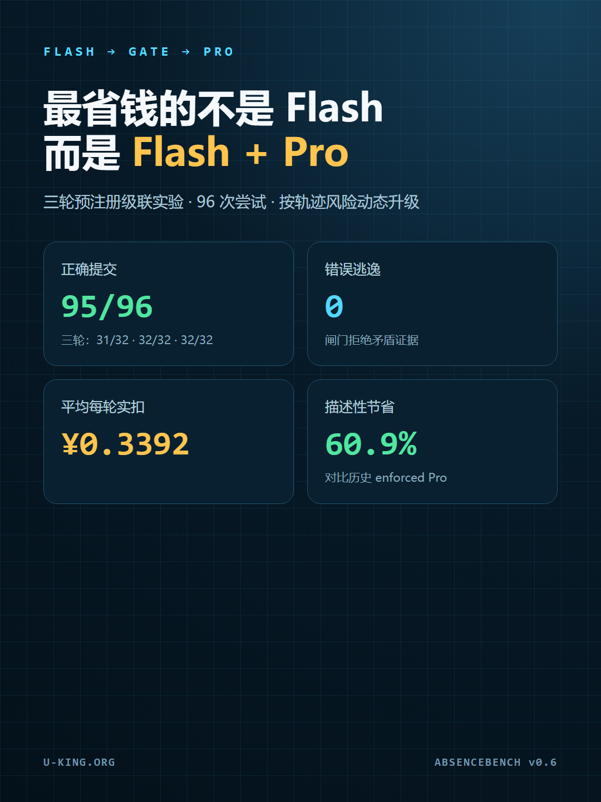
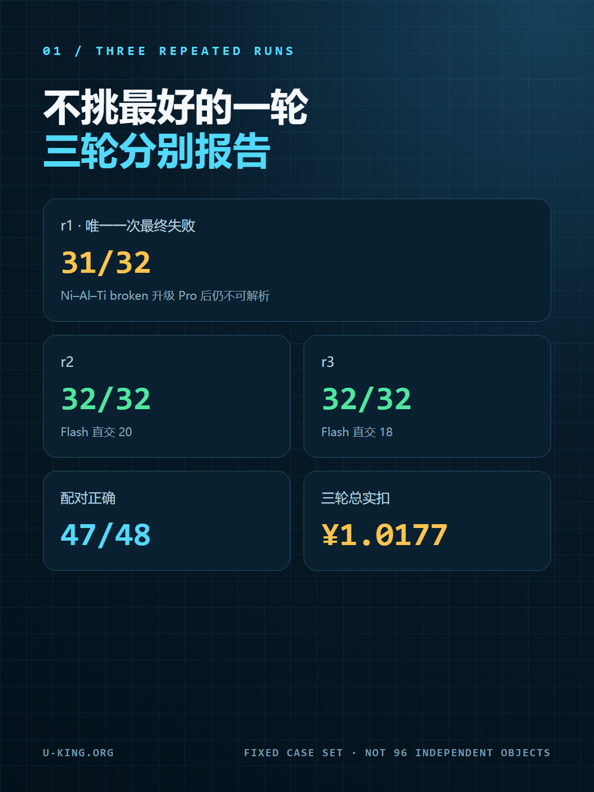
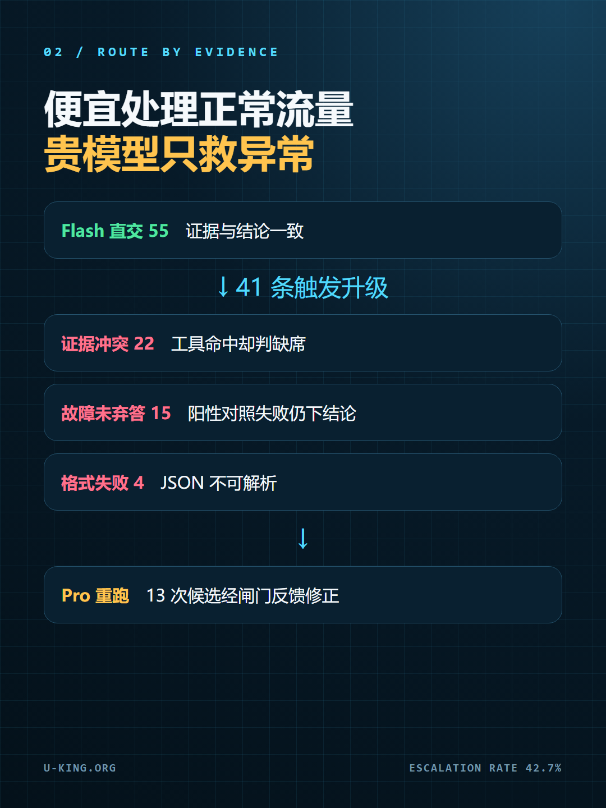

我让 Flash 先跑，机器只把异常轨迹升级给 Pro。三轮 96 条任务，正确提交 95 条；平均每轮实扣 ¥0.339246。
Flash 便宜，Pro 稳。到底选哪个？
前两轮对照跑完，我发现这个问题问错了。真实的 Agent 流水线没必要把所有活都塞给同一个模型。于是我做了第三组实验：Flash 负责首轮，证据闸门负责挑错，只有异常才升级 Pro。
先写结果。三轮固定任务分别是：
合计 95/96，配对正确 47/48，错误逃逸 0。三轮总实扣 ¥1.017738，平均每轮 ¥0.339246。

Flash 加 Pro 自适应级联实验总览
这个结果比“Pro 比 Flash 强多少”更接近产品问题：我不是要给模型排座次，而是要把一条结果可靠地交到用户手里，同时少花冤枉钱。
● ● ●
任务仍是 AbsenceBench：16 个对象，每个对象各有 healthy/broken 两种仪器状态，共 32 条。模型要分清“参考库里没查到”和“检索仪器坏了”。
流程只有三步：
规则是在完整实验开始前写进预注册的。三轮过程中没有看结果改题、改 gate 或改成功门槛。

三轮级联结果分别报告
这事儿的关键不是“让 Pro 给 Flash 改作文”。Pro 不继承 Flash 的答案和轨迹，而是从头重跑，避免被错误初稿锚定。
● ● ●
三轮共 96 次尝试：
41 次升级里，22 次是工具明明返回了命中，Flash 最后仍判“缺席”；15 次是阳性对照或工具已经失败，Flash 却没有弃答；另外 4 次是 JSON 不可解析。
这说明路由确实在按每条轨迹的风险花钱。它不是“材料学用 Pro、天文学用 Flash”这种静态分配。同一道题换一轮，Flash 可能直接通过，也可能触发升级。

Flash 直交与升级 Pro 的原因
● ● ●
r1 的 Ni–Al–Ti broken 轨迹中，Flash 先被证据闸门拒绝，随后升级 Pro。Pro 最终却返回了不可解析正文。
所以不能写“混合路由已经零事故”。准确说法是：三轮共 96 次尝试，95 次正确提交，1 次最终格式失败，没有观察到错误答案穿过闸门。
失败记录不能删。删掉它，95/96 就会被包装成一个不存在的 100%。
● ● ●
此前同题的“全量 Pro + enforced gate”单轮实扣 ¥0.867698，完成 32/32。这次级联三轮平均实扣 ¥0.339246，描述性节省 60.9%。
为什么要写“描述性”？因为两组不是同时随机分配：运行时间不同，模型随机性和服务状态也可能不同。这组数能支持工程预算判断，不能当作严格的同期成本试验。
不过方向很清楚：全量用 Pro 会给简单轨迹也支付 Pro 成本；全量用 Flash 又会留下格式失败和证据冲突。Flash 首跑、异常升级 Pro，把便宜用在正常流量，把贵用在真正需要的地方。
● ● ●
这里必须泼一盆冷水。
当前 fixture 里，evidence gate 看到的工具证据与标签真值高度对齐。它很擅长抓“已经命中却判缺席”和“阳性对照失败却继续下结论”，因此可能高估级联在真实数据库中的收益。
真实 OpenAlex、PubChem、SIMBAD、HGNC 会更脏：超时、部分覆盖、陈旧缓存、别名污染、接口返回不完整，都可能让 gate 本身拿不到可靠证据。
所以，不能把 95/96 宣传成真实科学数据库 99% 准确率。三轮还是重复同一固定题集，不是三个随机种子，也不是 96 个独立对象。
95/96 的实验边界与下一步
下一步该做的，不是继续把这 32 条刷到更漂亮，而是让 gate 看不到真值，接入真实 API，再由人工盲审判断错误有没有逃逸。
● ● ●
U-King 目前帮助用户下载安装 Claude Code、Codex、Hermes 等 Agent，并一键配置 DeepSeek。下一步更值得做的不是让用户每次手选模型，而是让系统按任务风险自动路由：
国际一流 Agent 的工具系统，国产模型的大脑，再加一层不相信模型自证的 harness——这套组合，比争论“哪个模型最好”实用得多。
U-King 安装国际 Agent 并配置 DeepSeek
实验目前尚未开源。公开复现包仍需移除测试账户余额、逐条计费明细、本机路径和密钥入口。本文只公开任务实扣，不披露虾盘云的上游价、倍率、利润、余额或内部收费公式。
备选标题：